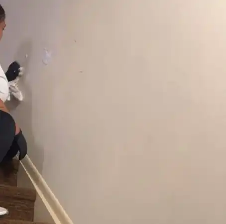

Post Construction Cleaning in Manhattan
Manhattan renovations come with strict building rules and tight timelines. We clear the construction dust so your apartment or office is ready for the walk-through.

Every clean covers
Every renovation is different, so we quote each job. Send photos and we reply fast.
We follow your building rules
Service elevator bookings, work hours and insurance certificates are part of every Manhattan job. We schedule inside your building rules.
We work with general contractors, designers and owners, from single bathrooms to full gut renovations.
Post Construction Cleaning in Manhattan: your questions
Can you provide a COI for my co-op or condo?
Yes, we issue the certificate of insurance before the job.
How do you price it?
By the size of the space and how much dust is left. Send photos for a quote.
Can you work within building hours?
Yes, we schedule around your building work hours and elevator bookings.
Do you remove large debris?
We remove small leftover debris and trash bags. Large debris stays with your contractor.
Do I need to provide supplies?
No. We bring all supplies.
Save 10% on local moves and 5% on long distance with our partner Piece of Cake Moving. Use code CLEAN20.
Recent work by our team


Arturo and his team were professional, punctual, and thorough from start to finish. They left the apartment sparkling clean, paying careful attention to the details. I'd gladly hire them again and recommend their cleaning service to anyone looking for reliable, high-quality work.
Ready for a spotless home?
CALL US TODAY FOR A CLEANING TOMORROW!